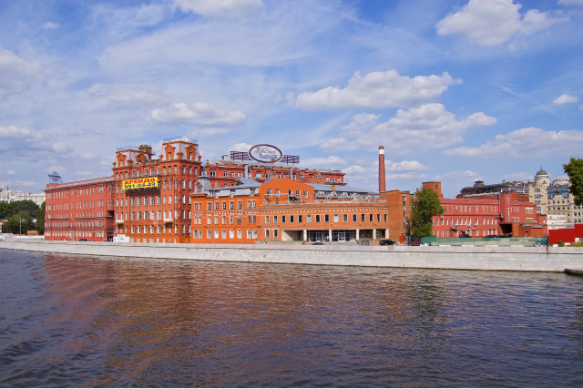
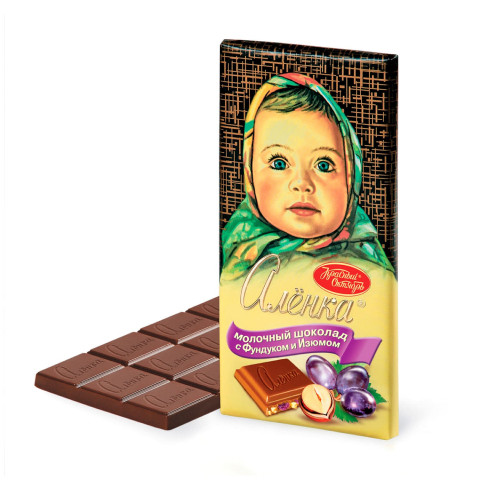
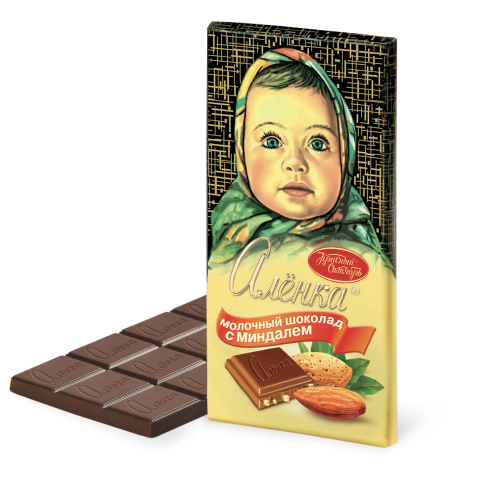
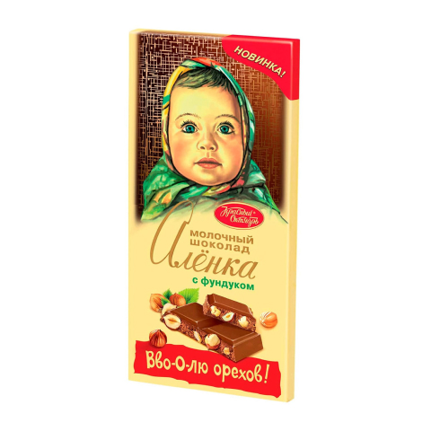

Аленка
Шоколад для мечты.

Знаменитый шоколад «Алёнка»® выпускается кондитерской фабрикой «Красный Октябрь» с 1965 года. Символ счастливого детства нескольких поколений и по сей день остается любимым семейным лакомством. 9 из 10 потребителей называют «Алёнку» любимым шоколадом своего детства.
В настоящее время под торговой маркой «Аленка» выпускается большой ассортимент кондитерских изделий, для семейных праздников и событий, с привлекательным соотношением цена/качество. Локомотивом бренд-зонтика «Аленка» является молочный шоколад.
Красный Октябрь
Проверенный временем вкус

«Красный Октябрь» — московская кондитерская фабрика на Берсеневской набережной, построенная фирмой «Эйнем» в 1890-е годы, после Октябрьской революции была национализирована и получила настоящее название.
Изобилие
Выберите свою Аленку

Аленка с Фундуком и изюмом
Изысканное богатое сочетание дробленых ядер лесного ореха и вязкой виноградной сладости изюма с нежным вкусом классического молочного шоколада «Алёнка», созданного по оригинальной рецептуре 60-х годов. Прекрасное дополнение к чаю, кофе, утонченное лакомство для легкого перекуса, когда хочется сладкого.

Алёнка с миндалем, Красный Октябрь
Молочный шоколад «Алёнка» с отборным дробленым миндалем. Сочный и ветреный аромат миндаля переплетается с нежным молочно-шоколадным вкусом, делая его более глубоким и насыщенным. Никогда еще «Алёнка» не была такой утонченной. Более взрослый, изысканный вкус любимого с детства молочного шоколада – для повзрослевших сладкоежек.

Алёнка с фундуком
Молочный шоколад «Алёнка» с удвоенной порцией лесных орехов – для тех, кто любит похрустеть шоколадкой! 200-граммовая плитка оригинального молочного шоколада «Алёнка», щедро насыщенная кусочками дробленого фундука. Хрустящее удовольствие и отрада для тех, кому всегда мало начинки. Шоколад орехами не испортишь! А с «Алёнкой» ими можно насытиться вволю.